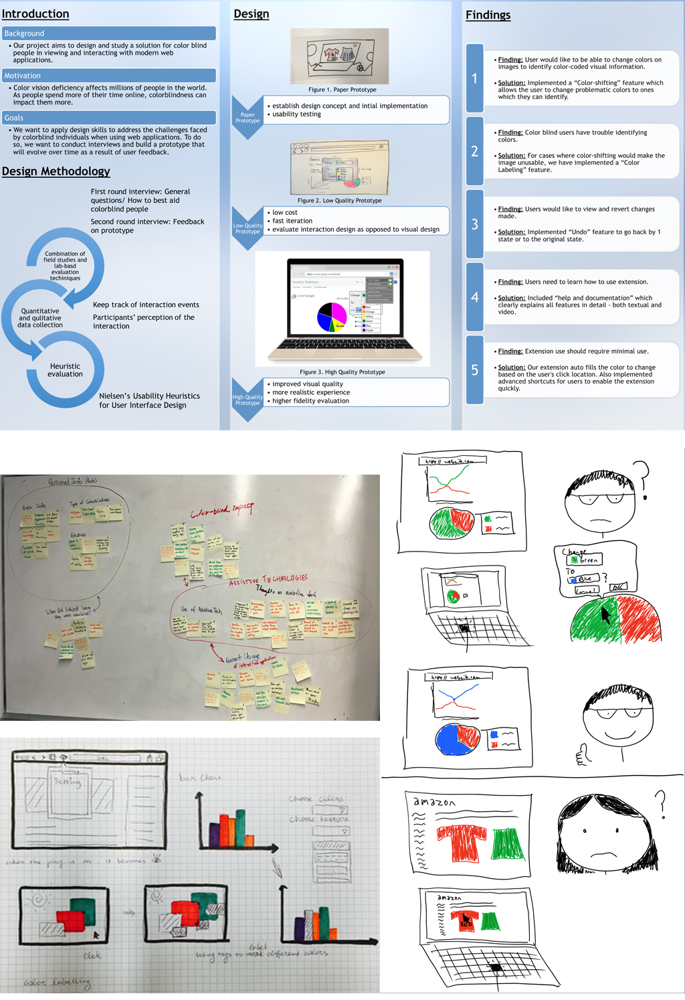

Currently I’m a student in Cornell University. Studied in UK before and came from China. Eager to try new things. Love travel.❤
About
2008 - 2011
High School attached to ZJU
The most precious time of my life.
2011 - 2015
Zhejiang University of Tech
Studied Computer Science and Technology and English Literature as second major.
December 2014 - 2015
Loughborough University
Studied Computer Science. Learnt 2D and 3D Computer Graphics, and Computer Vision. Was guided by Dr. Helmut Bez.
2015 - Current
Cornell University
Currently studied Information Science. Learnt Human-computer Interaction Design, Rapid prototype, Data Visualization.
STILL
ON THE
JOURNEY
Web Extension for the Colorblind
Usability Study and User experience

Color vision deficiency affects hundreds of millions of people in the world today. The problems colorblind people experience while interacting with computers, specifically when using web browsers, is our primary concern. Our project aims to find and prototype a solution for colorblind people when viewing and interacting with modern web applications. Through this project, we want to apply design skills to these specific individuals and address some of the challenges in their daily life. To better understand our target audience, we conducted interviews with a group of colorblind people to determine their requirements and expectations of our project.
Our research shows that there are currently no sufficient solutions offered in this area to help colorblind people identify color better in this context. However, this remains a problem since these users still want some kind of assistance when working with web pages, which is not being sufficiently addressed. After conducting interviews with colorblind people, we decided to create a web browser extension to help users view visual data on the Internet more easily, specifically in web applications that use a lot of color to convey information.
Collaborated with four students with different backgrounds, we are seeking for answers to best aid colorblind people in viewing and interacting with modern web applications. In this project, I went through the entire process of doing an HCI project, starting from filling IRB forms to making presentation of the work after several times of iteration. The methods we used include a combination of rigorous and empirical field studies and lab based evaluation techniques.
The above pictures patially demonstrated the process of our team doing the usability studies.
This responsive data visualization helps identify which state has the worst drivers. Road traffic safety is one of the major concern in the world. The road collision problem is acute since the number of victims are overwhelming and the situation is severe. Since the USA is the country on the wheels, we wonder how the situation is here.
This visualization can be viewed using phone or tablet as well.
You can play around the visualization and see what you can find.
Tracking and Tracing System of Agriculture
Usability Study and User Interface Design
This platform has already been used in China by hundreds of factories and farms. I joined the team in 2013 to provide advice and help improve the user experience of the system. I learnt a lot during investigation and interview, which became great asset of my future UX study. The screenshots above tell the improved interface.
MarketSmith Tools
Quality Assurance
This summer (2016), I was doing an internship as a QA in a company based in Hangzhou. I was in the MSTools team, which was cooperating with other companies to develop the MarketSmith Global. My major responsibility is to test the performance and give suggestions about user experience.
Right Search Engines for Travel Planning
Usability Study
To compare different search engines and evaluate their guidance for users, we aim at helping them make travel decision efficiently. When users are not familiar with their travel destinations and have no specific plan, they tend to start with using search engines to assist them find out places of interests. Specifically, we want to concentrate on how much valuable information they can get to build an initial picture of the destination by searching on different engines.
This is an interactive data visualization. The interface uses dynamic elements to show more information than can be presented in a single view, as Shneiderman’s formula: “overview first, zoom and filter, then details on demand.”
The topic is about the hottest movie Captain America: Civil War. The visualization is more like a movie guide which provides an intuitive wayto present the relationships and information of characters.
Date: April 2016
Category: Data visualization and Design
Mobile Membership Credit Management System
Mobile Application
This is a mobile software which manages the member credit for online shopping. I was the project manager in the team and worked with four other students who had different strengths. Basically, I took charge of the project planning, requirements analyzing, and testing. And I also did the front end design work. Above is how the mobile application looks like.
I learnt a lot from this team experience like how to manage time and coordinate teammates to work together even at the end of the semester when they were quite occupied and busy preparing for the examinations.
Digital Pic Frame for Nursing Home Residents
Usability Study
This design aims to improve life quality of people in nursing home and is more than a digital photo frame. Through investigation, we discovered that residents valued the family visits most and wanted more connection with their families. So the photo album idea bumped into our mind and we want to use an intuitive technology to assist residents share photos with their cared ones as well as their feelings.
The design process involving conducting interviews, creating personas and identifying problems, brainstorming individually, holding group meetings, and making prototypes, etc..
Residents in nursing house seek the warmth of home and our design provides such a channel to exchange photos without the need of much knowledge of technology. They will use a digital photo frame as device and in the mean time, their families will have application installed on their phones or computers to share photos and feelings together.